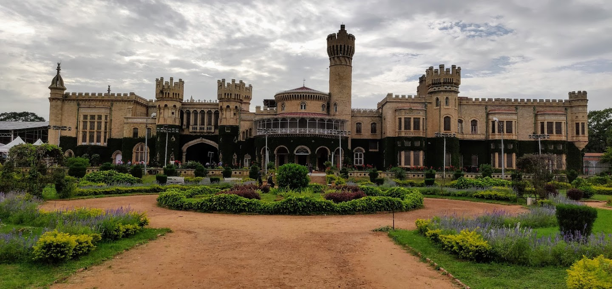
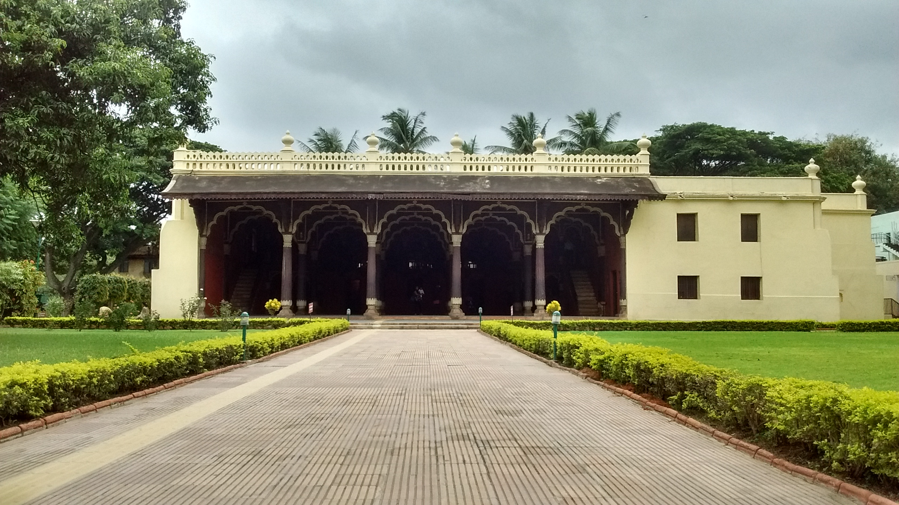
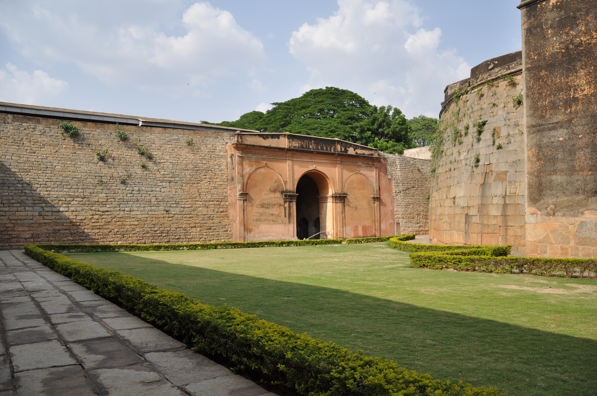

Historic Places & Monuments
Click any landmark card below to open an interactive view with multiple photos, history, timings, and visiting details.

Bangalore Palace
Famous palace with grand architecture, royal interiors, ornate details, and expansive grounds.
View Details & Gallery →
Tippu Sultan’s Summer Palace
Historic teakwood palace with fluted pillars, cusped arches, and detailed floral ceiling frescoes.
View Details & Gallery →
Bengaluru Fort
Historic stone ramparts and gate dating back to Kempe Gowda, Hyder Ali, and Tipu Sultan.
View Details & Gallery →